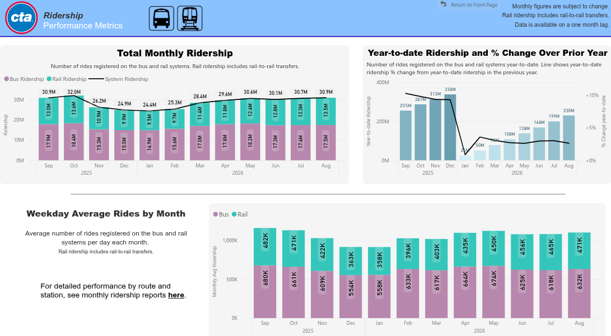
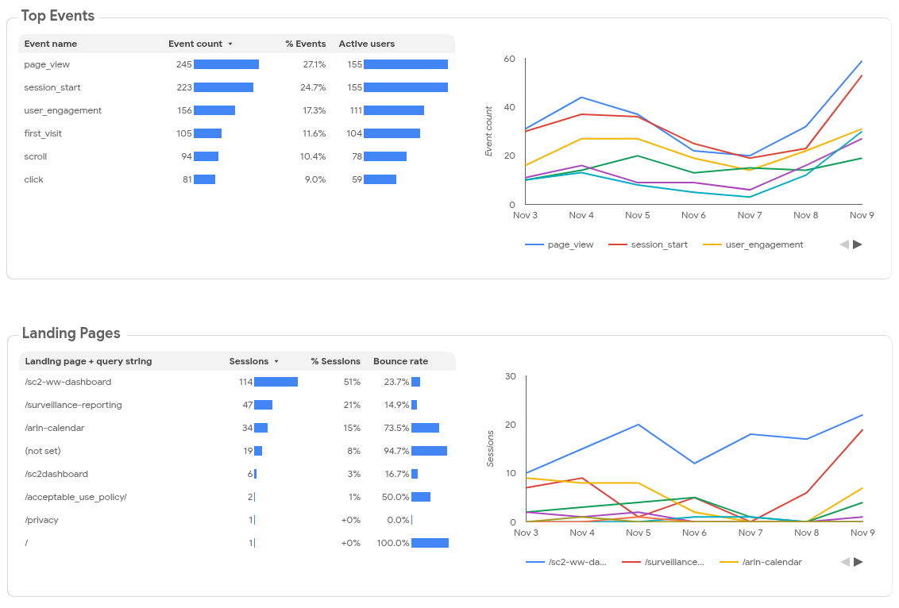

Dashboarding Foundations
Kelsey Florek, PhD, MPH
Senior Genomics and Data Scientist
Wisconsin State Laboratory of Hygiene
- Define a dashboard's purpose, intended audience, and public health use case, including the questions it should answer and the decisions or actions it should support.
- Differentiate internal and external reporting needs and identify how those needs influence a dashboard's content, level of detail, terminology, and interactivity.
- Select genomic and epidemiologic measures and contextual information appropriate to a defined use case, including relevant denominators, time periods, geographic resolution, and data limitations.
- Match visualization types and interactive features to specific analytical questions, such as monitoring trends, comparing groups, and exploring genomic findings alongside epidemiologic context.
- Identify design and communication choices that support accurate interpretation, including clear visual hierarchy, consistent labels, accessible use of color, and explicit communication of uncertainty and data completeness.
- Critique a public health genomic dashboard and propose improvements to its clarity, usability, and ability to support public health interpretation and action.
Data storytelling and Dashboards
Data storytelling and Dashboards
Fundamental Considerations of Dashboards
- Optimized to provide real-time insights and facilitate data exploration
- Assumes the user has sufficient knowledge to interpret the data
- Designed to answer: "What is happening now?"

Setting up your data to meet your audience
Audience-Centric Dashboard Questions
- Who is going to see this dashboard?
- Are they internal to the organization or external stakeholders?
- What decisions will they make based on this data?
- What parts of the data are most relevant to them?
- What parts of the data are not relevant to them?
- Do they need to interact with the dashboard to gain insights?
Internal vs External Audiences
- Internal audiences are typically familiar with the organization's context and may expect more detailed data
- External audiences need more context and high-level summaries to understand the data
- Internal audiences may expect more interactive elements to explore the data
- External audiences may prefer a more guided and simplified interaction with the dashboard
Cost of Attention in the Attention Economy
- Attention is a scarce resource in the digital age
- Dashboards need to evaluate the cost and value of a long-lingering vs quick-glancing capture and retain the audience's attention effectively
- Cluttered or overly complex dashboards can lead to cognitive overload
- Focus on the most important metrics and insights for the audience
Building feedback into Dashboard design:
focus groups or representative users
- Explain the goal and purpose of the dashboard
- Specify the feedback you are seeking upfront
- Provide a scenario and ask users to find a specific trend or answer a question
- Ask "What stands out in the first 5 seconds can you spot what needs your attention immediately?"
Building feedback into Dashboard design:
telemetry

Meeting your audience's needs exercise
Examine the following dashboards and consider how well they meet the needs of their intended audience. Take note of what works well and what could be improved.
Reflections
- How did the choice and implementation of dashboard technology stack impact the effectiveness and usability of the dashboards you examined?
- What design choices helped or hindered your understanding of the data?
- Who was the dashboard intended for? Do you think it delivered?
Evaluating Dashboard Technologies
SaaS Dashboard Platforms
Advantages
- Easy to use and maintain
- More accessible to non-technical users
- Catalog of commonly used visualizations
- Authentication and access control built in
Disadvantages
- Limited customization and often inflexible visualizations
- Performance issues with large datasets
- Generally not suitable for narrative reports
- Cost
IT and Software
In reality, IT departments often face challenges such as limited resources and the need to balance security with usability. These constraints push organizations to adopt vendor-provided solutions with support and maintenance contracts included.